2026.11.21 sat – 22 sun ／
新潟・古町7番町
2026.11.21 sat – 22 sun ／
新潟・古町7番町
7〜15歳の子どもだけが市民になれる、2日間だけの小さなまち。
お仕事をして、お給料をもらって、税金をおさめる。
遊びをとおして“社会”まるごとを体験する、あたたかいまちです。

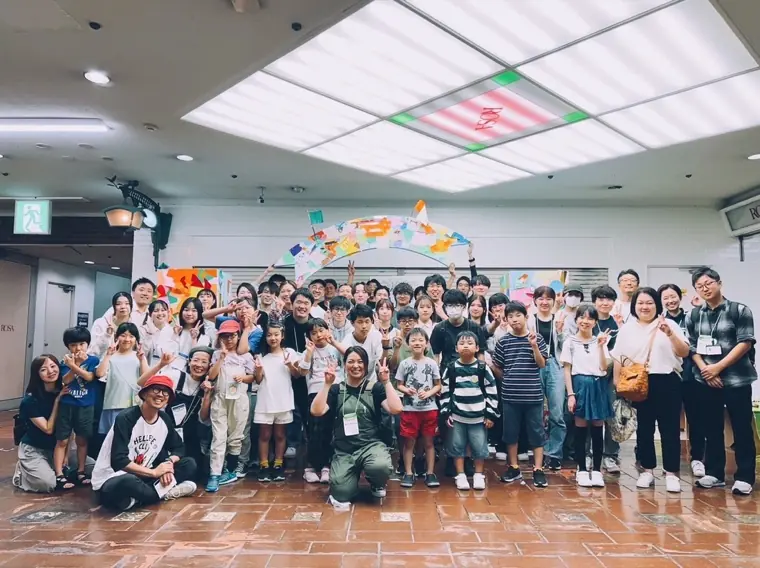

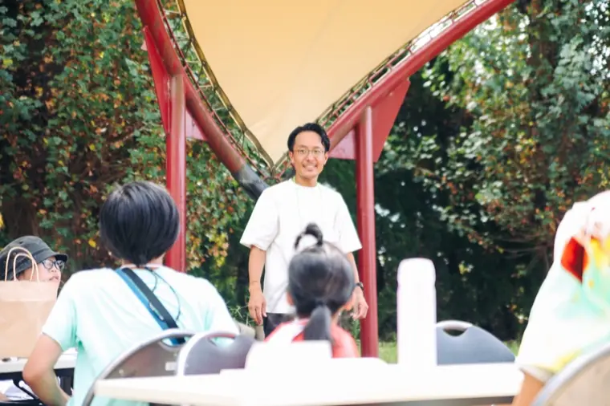

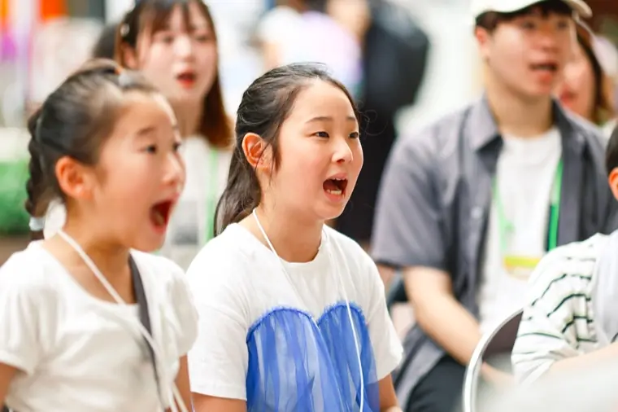
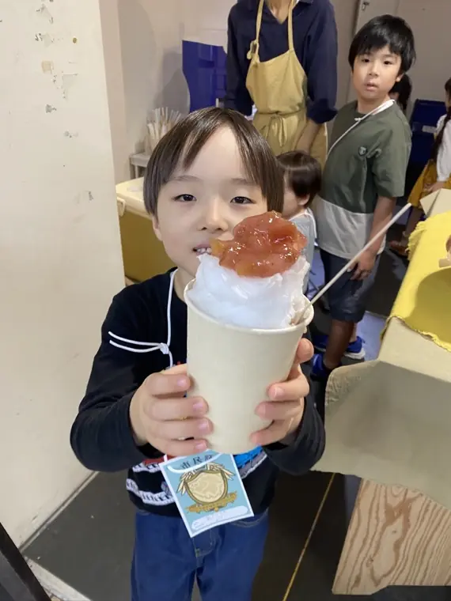

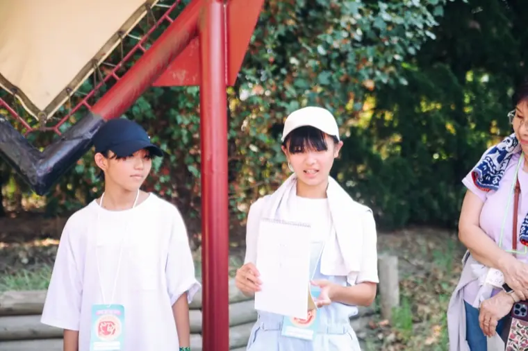
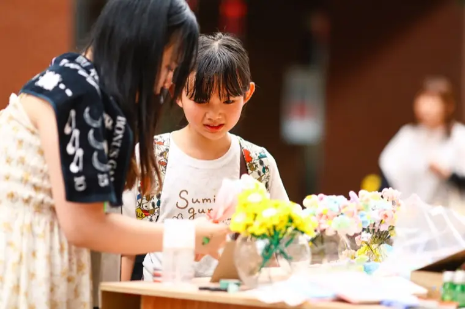
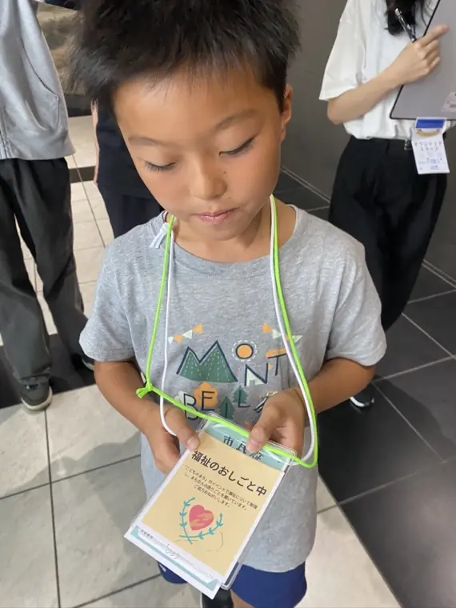
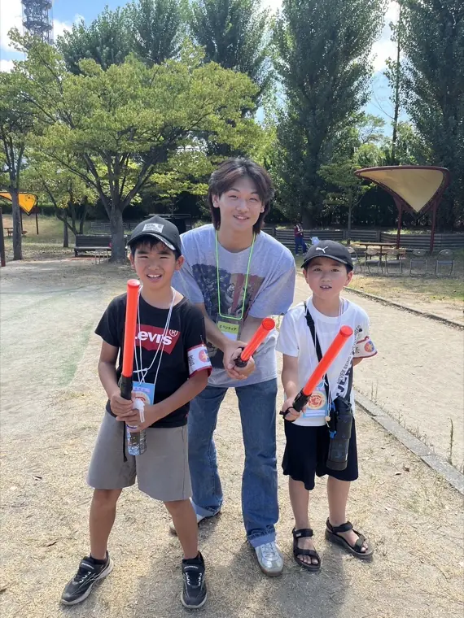
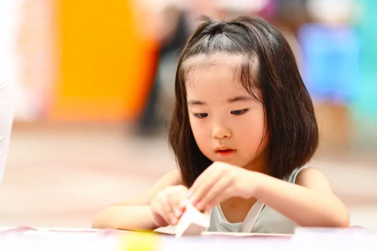
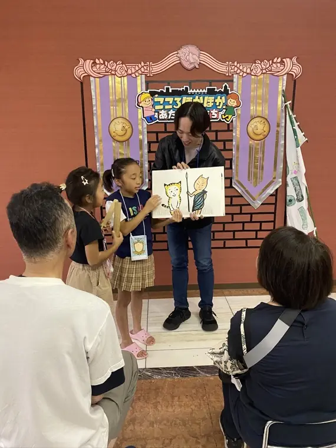
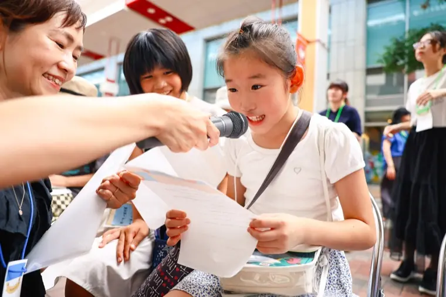
まちに入ったら、あなたも市民のひとり。
働いて、おかいものをして、まちのことを決めて。
まちを動かすのは、あなたです。
受付でとうろく。パスポートをもらって、あなたもここほかの市民に。
ハローワークでお仕事さがし。やってみたい仕事にチャレンジ！
お仕事をがんばると、まちの通貨「ココ」が支払われます。
お給料から税金を納めよう。これがまちを動かすお金になります。
のこったお金で、ごはんを食べたり遊んだり。大学で学ぶこともできます。
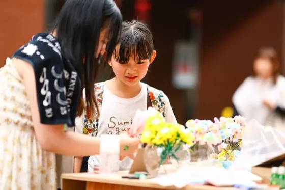

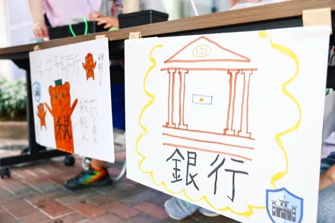
市役所・銀行・警察・ハローワークといったまちを支える仕事から、お店の見習いまで。いろんなお仕事があります。
お仕事を見てみる →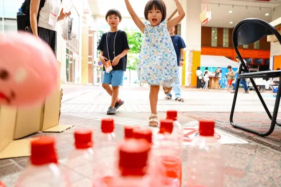
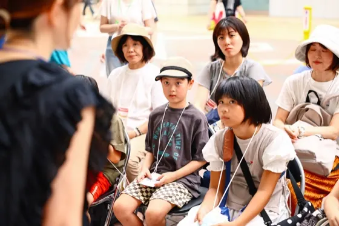
ゲームやワークショップ、紙しばい。おもしろい大人がおもしろいことを教えてくれる「こども大学」も。遊びかたもいろいろ。
あそび・まなびを見てみる →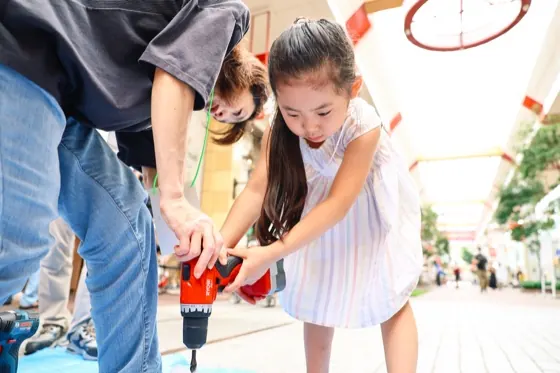
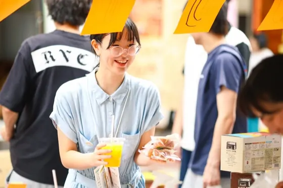
地元のパン屋さんやお店も出店。ここは働ける場所であり、稼いだ「ココ」を使えるお店でもあります。
出店するお店を見る →子どもは「市民」として。大人は、まちを楽しむ「ビジター」か、まちを支える「ボランティア」として。
どなたも大歓迎です。
2026年11月21日（土）・22日（日）／新潟・古町7番町
参加のしかたは3つ。自分に合うものを選んでください。
※事前申し込みの締め切りは11月18日（水）です。過ぎてしまっても、当日受付で参加できます。
参加しなくても、知ってもらえたらうれしいです。なぜこの活動をしているのか。この3年で、まちがどんなふうに育ってきたのか。まとめてあります。